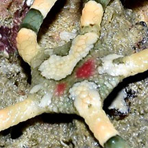
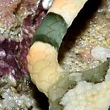
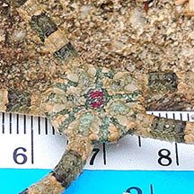
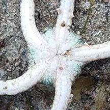
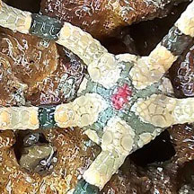
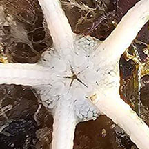

|
|
| brittle stars text index | photo index |
| Phylum Echinodermata > Class Stellaroida > Subclass Ophiuroidea |
| Twin-barred brittle star awaiting identification* updated May 2024 Where seen? This brittle star with colourful banded and 'smooth' arms is sometimes encountered on our Southern shores, under stones and rocks near reefs. Its smooth and banded pattern on the upperside reminds us of the Twin-barred Tree snake. Features: Disk diameter 0.5-1.5cm, arms 3-5cm long. Central disk flat and smooth. Arms somewhat cylindrical, smooth (not as bristley as other brittle stars) towards the end, tapers to a sharp point. Underside plain pale or white. Arms seem to be made up of articulated scale-like structures. On pale orange arms, bold banded pattern of olive green with darker green edge. Central disk with varying patterns, some with one or more bright red spots. The brittle stars on this page maybe probably from different species. They are grouped together for convenience of display. |
 Central disk |
 Upperside of arm. |
 Central disk |
 Underside. |
 Central disk |
 Underside. |
*Species are difficult to positively identify without close examination.
On this website, they are grouped by external features for convenience of display
| Other sightings on Singapore shores |